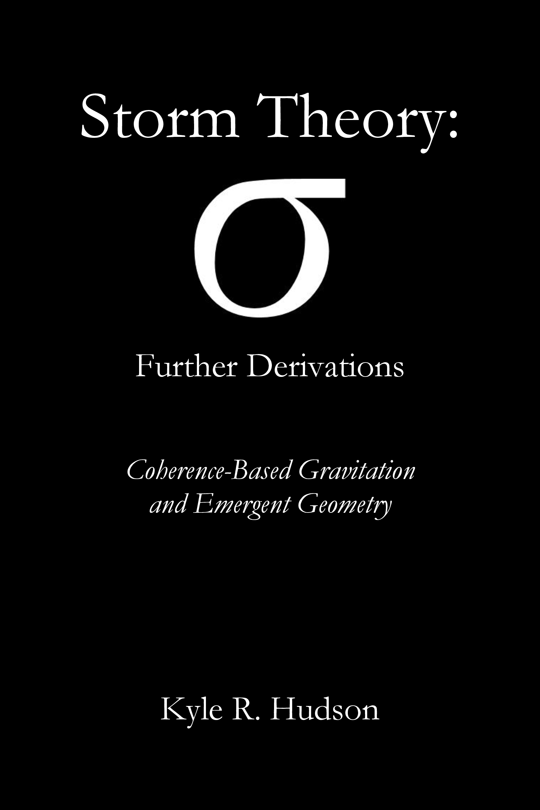
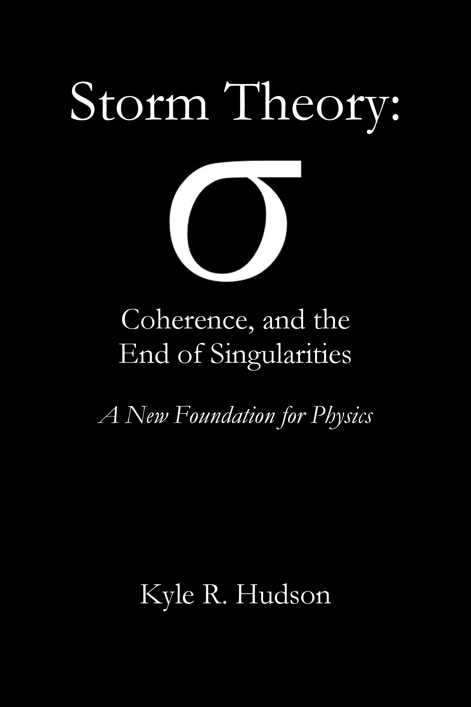

Storm Theory: σ,
Further Derivations
Coherence-Based Gravitation and Emergent Geometry
The complete mathematical bridge from ontology to observable physics.
Derives the σ-dependent metric, soft-core black holes, coherence-gradient force law, modified ringdown, and the full Einstein-to-Storm reduction.
↓ Download Hudson's Second Book — Storm Theory: Further Derivations — FREE
Storm Theory
σ
Coherence, and the End of Singularities
A New Foundation for Physics
What if the universe is not calm, stable, or deterministic?
What if Being itself is an infinite, unbounded storm of indeterminacy — and every “thing” you’ve ever studied (atoms, stars, minds, black holes) is only a temporary droplet of coherence fighting to stay intact inside it?
Storm Theory removes the cataracts of assumption that have blinded physics for centuries. Singularities dissolve. Gravity becomes a coherence gradient. Persistence is revealed as continuous self-repair, not metaphysical guarantee.
This is not another patch on the old house.
This is the view from outside.
↓ Download the full 785-page first edition — FREE
